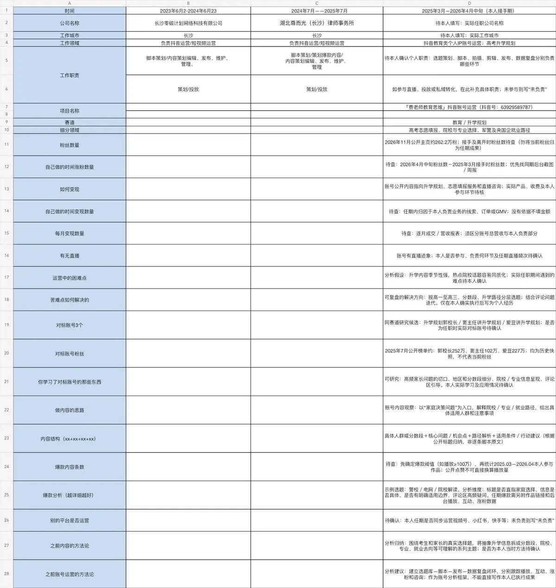
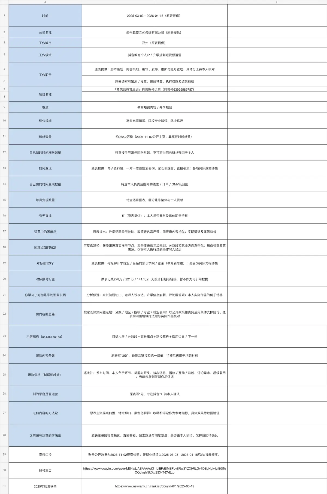

Hi,
也可以叫我的英文名：Jingyi
📍我擅长用内容 + 数据 + AI，让短视频被看见
这是我的个人作品集网页，欢迎探索 👋
后续上传的视频会直接替换当前作品位
2个作品位
3个作品位
示例作品，后续可替换
已预留4个AI作品位，素材到位后直接替换
围绕教育议题进行选题策划、口播脚本、发布运营与内容复盘，搭建可复用的问题库和内容结构。

根据公开及第三方数据整理内容表现、账号阶段和运营问题，区分账号结果与个人贡献。

短视频编导 / 教育IP内容 / AI视觉创作